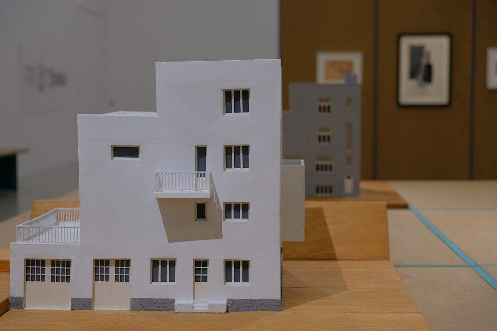
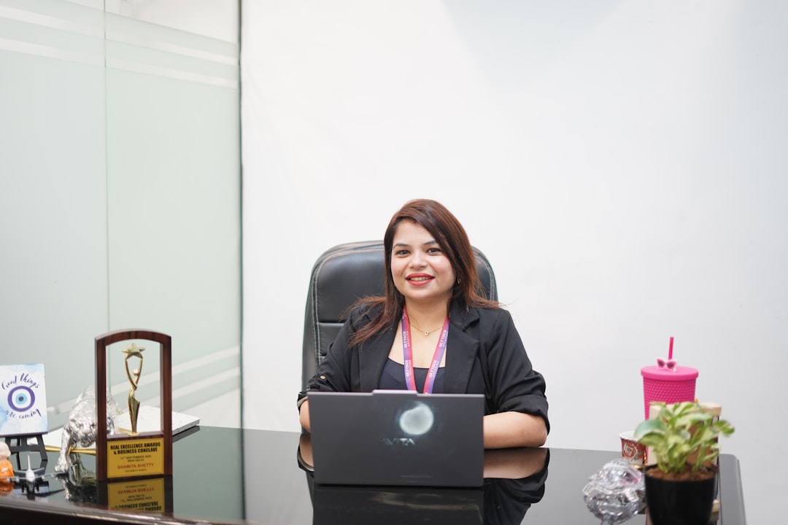
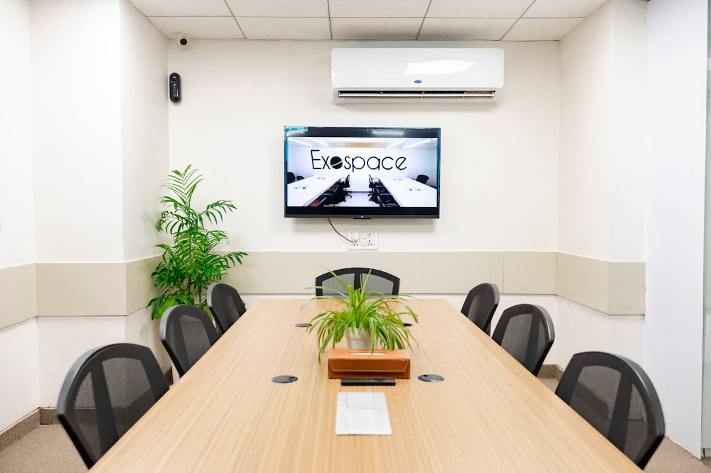
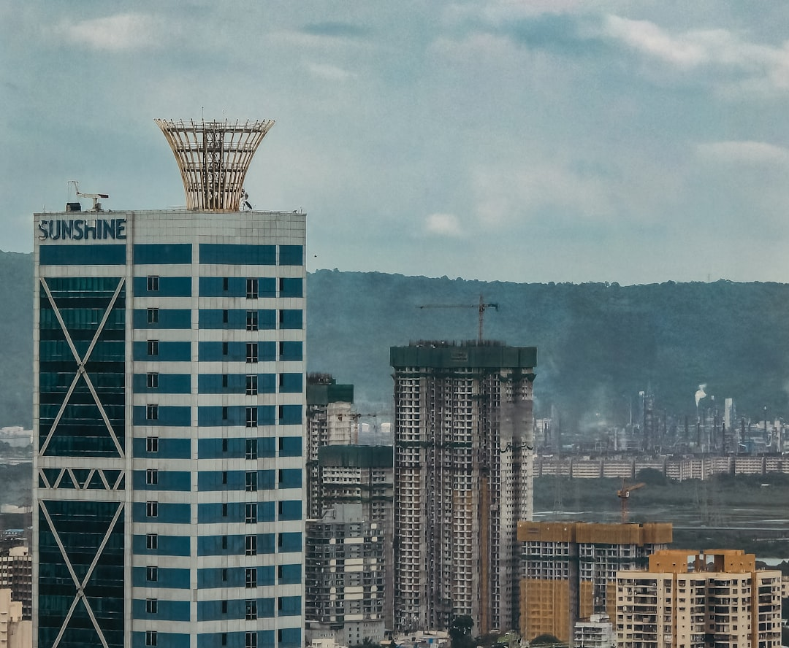
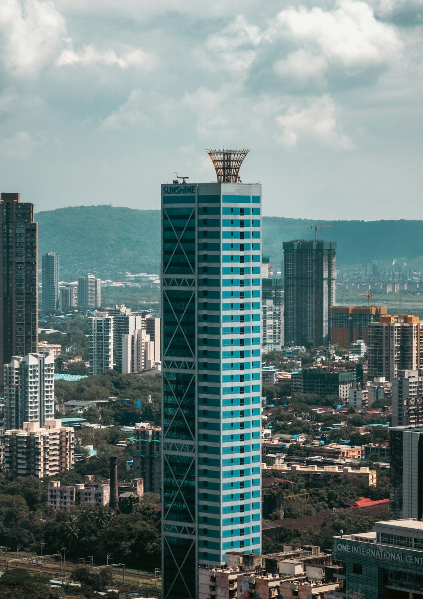
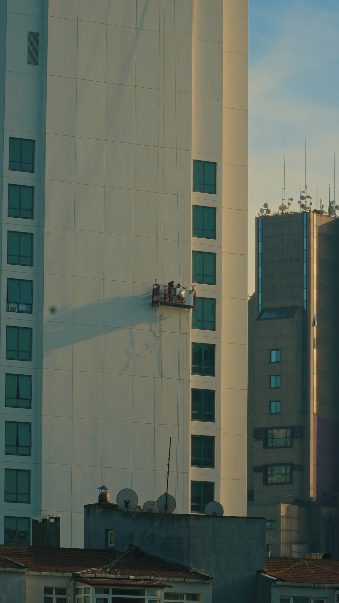
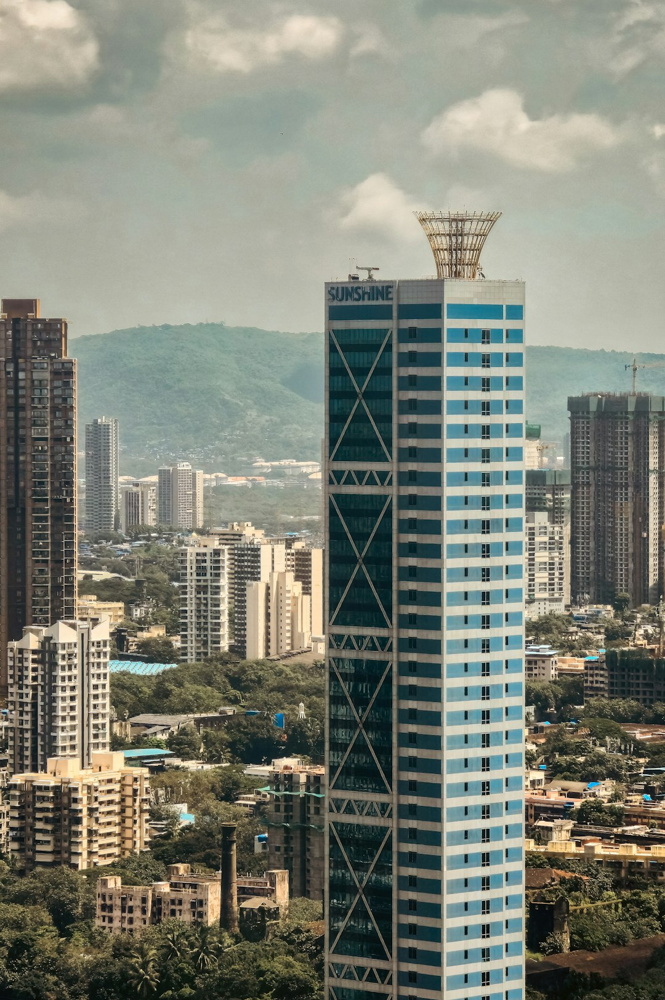
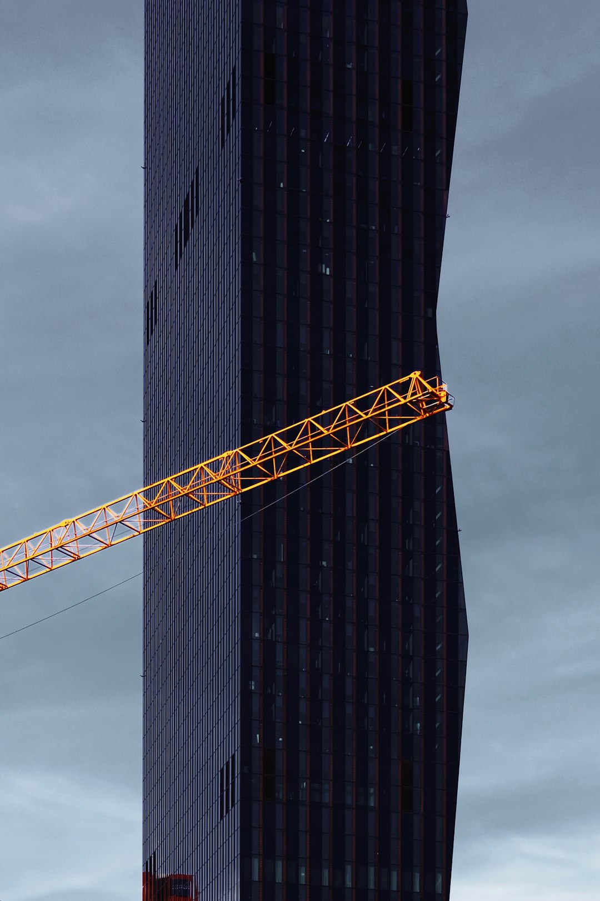

Brushed bronze without the fuss: patina, sealing, and touchpoints
How we specify bronze so it ages gracefully across façades, handrails, and interior thresholds—without constant maintenance.
Request our bronze spec sheetAtelier Lumen designs residences, workplaces, and civic spaces where daylight, structure, and craft align. From early feasibility to construction oversight, we deliver calm, high-performance environments that age beautifully.



Our process pairs editorial clarity with tactile experimentation—mockups, light studies, and iteration cycles that translate from concept to construction with minimal friction.
We treat sustainability as a design constraint that improves the experience: balanced daylight, low-toxicity finishes, durable details, and envelope performance that supports comfort across seasons.


Innovation lives in the details: façade rhythm, joinery, and systems coordination that stays legible to stakeholders. We use parametric tools and physical mockups to make complexity feel calm.
Drag through stories from founders and development teams—how clarity in documents and calm decision-making changed outcomes.

Founder, Calder Hospitality Group
“The design documents were unusually readable—clean details, clear coordination, and a material palette that felt elevated without being precious. Our contractor praised the set, and the punch list stayed short.”

Development Director, Meridian Properties
“Their feasibility package gave us a decision we could defend—daylight metrics, cost levers, and a phased scope. It reduced uncertainty with investors and accelerated permitting.”
Operations Lead, CoWork Atlas
“The space feels ‘quiet’ even at capacity—acoustic zoning, circulation, and lighting were all tuned. The team communicated trade-offs with exceptional clarity, so decisions felt easy.”

Civic Program Manager, Riverline Trust
“They hosted workshops that brought planners, neighbors, and engineers into the same frame. The final plan preserved the budget while elevating public comfort and accessibility.”
Premium design, grounded in coordination and measurable performance.
98% on-time milestone delivery (last 24 months)
Clear scopes, coordinated drawings, and structured reviews keep schedules predictable without sacrificing craft.
12 nominations • 5 wins across design & sustainability
Recognized for façade composition, public realm integration, and the quiet rigor of well-documented details.
Up to 34% embodied carbon reduction vs baseline specs
Balanced materials and smart assemblies—optimized for durability, repairability, and low operational demand.
A selection across residential, commercial, and civic work. Each project is supported by material boards, daylight tests, and coordination workflows designed to reduce surprises during construction.
A workplace designed for focus and collaboration: soft circulation loops, acoustic zoning, and balanced lighting. The planning strategy supports future reconfiguration without affecting base building systems.
Read the planning notes
A warm stone-and-timber home centered on a planted courtyard. The façade uses deep reveals to soften glare while maintaining views. Interior joins align with structural bays for clarity and economy.
Request Full Deck
A civic room with a porous threshold—public seating, indoor planting, and a façade that catches morning light. Accessibility is designed into circulation and furniture layout from the first sketch.
Explore case studies
A snapshot of recent wins and shortlistings across design excellence, sustainability, and detailing.
Brushed metalwork and stone reveals engineered for long-term patina with minimal maintenance.
A civic threshold that blends seating, planting, and accessible circulation without visual clutter.
Material passports and repairable assemblies reducing embodied carbon while elevating tactility.
Editorial minimalism paired with decisive construction detailing—designed for calm and built for longevity.
A vertical neighborhood with shaded terraces, high-performance glazing, and communal layers tuned for daily life.
Urban Oasis Tower integrates a climate-aware façade with shared amenities: shaded garden decks, a community lounge, and a flexible co-working level. Structure and envelope are coordinated to keep services efficient and interiors quiet.
Deep vertical fins + operable shading tested in simulation.
Garden terraces every 8 floors, connected by a social stair.
Target: 28% operational energy reduction vs typical baseline.

Choose targeted consultation or a full-service engagement. Expand each phase to see what’s included and how decisions are documented.
Site reading, program alignment, adjacency diagrams, and a short decision memo outlining budget levers, schedule risks, and permitting implications.
A concise feasibility PDF with annotated plans, precedent references, and a “decision ladder” that maps options to cost and performance.
Iterative concept sets, façade and interior direction, and performance studies (daylight, glare, ventilation) aligned to your goals.
Option boards and model snapshots that keep conversations focused—what changes, why it matters, and what it costs.
Planning strategy, stakeholder coordination, and a review of access, massing, and local submission requirements.
An organized planning set, a compliance checklist, and a clear record of decisions and authority feedback.
Coordinated construction details, tender support, site reviews, and timely responses to contractor queries.
Issued drawing sets, site observation reports, and an action log tracking changes, quality, and close-out.
Notes from the studio: façade strategies, daylight studies, and how we build material palettes that look better with time. Filter by theme.
How we specify bronze so it ages gracefully across façades, handrails, and interior thresholds—without constant maintenance.
Request our bronze spec sheetA studio-friendly framework for using daylight metrics to improve comfort—without turning design reviews into spreadsheets.
See how we model earlyHow we keep stakeholders aligned with short, consistent deliverables that translate into clean documentation and fewer RFIs.
See the portfolio breakdownA practical checklist for healthier interiors—especially important for childcare, hospitality, and high-occupancy projects.
Get the checklistDigital tools are essential, but tactile light tests often reveal glare, shadow, and depth cues that screens miss.
Back to philosophy
A field-tested set of review checkpoints—model hygiene, interface details, and how we track decisions to keep teams aligned.
See construction supportFilter by sector to see how we balance concept, constraints, and delivery.
A dense floorplate redesigned with acoustic zoning and indirect lighting—improving focus while keeping flexibility for future teams.
A home organized around a planted courtyard. Deep reveals soften glare; material transitions align with structural bays for clarity.
Public threshold design combining seating, planting, and accessible circulation. Workshop-led planning reduced late-stage revisions.
A vertical neighborhood: shared terraces, community lounge, and efficient stacked cores—designed to remain legible at scale.
A compact civic pavilion that brings education and public comfort into a transit-adjacent site with tight constraints.
We combine architectural practice with product-like clarity—consistent deliverables, calm reviews, and deeply considered details.
We’re a design studio that treats coordination as part of aesthetics. The best spaces are not only beautiful, they are buildable, legible, and maintainable.
Elegant assemblies, clear interfaces, and materials that improve with age.
Daylight, acoustics, and thermal balance translated into everyday ease.
Drawings that read well to builders and reduce rework on site.
We hire for clarity of thinking, love of craft, and respect for builders. Hybrid options available depending on role.
A selection of technology and material partners supporting our modeling, visualization, and specification workflows.
We’ll respond within two business days with recommended next steps, an initial timeline, and a suggested engagement structure.
30 minutes • scope alignment • quick feasibility questions
Scope options • fees • schedule • deliverable list